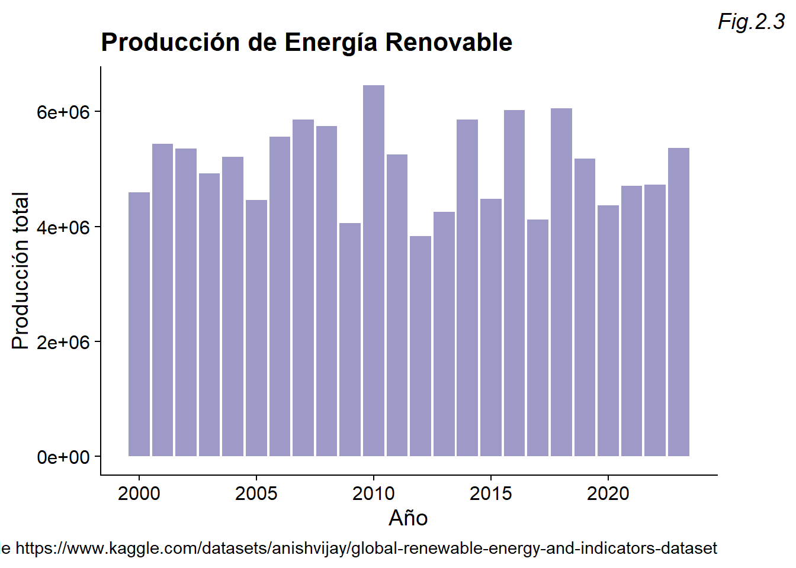
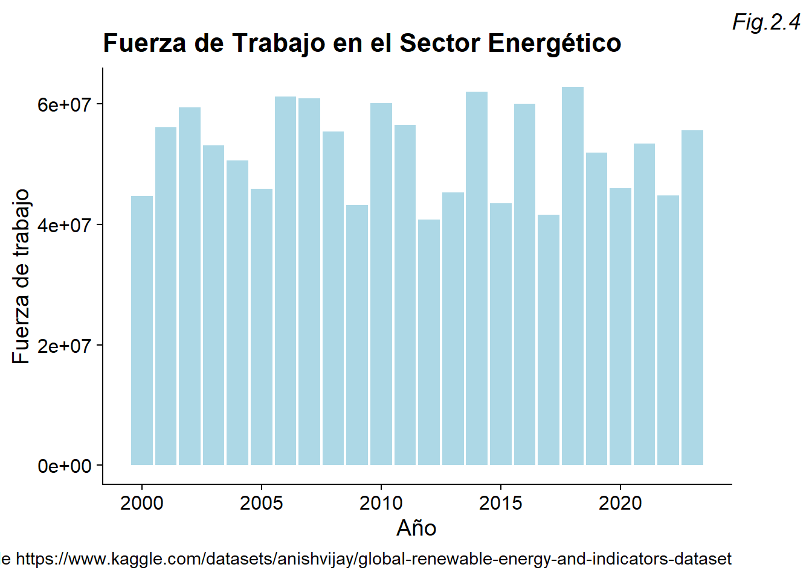
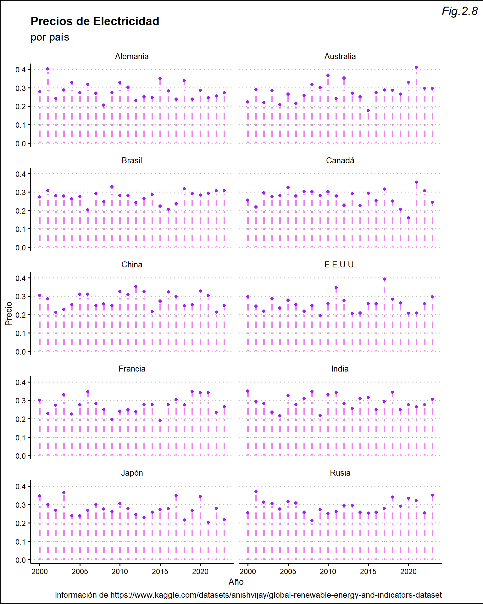

Paola Espinoza Hernández, Gabriel Sanabria Alvarado
2.0.1 Setup
Warning: package 'ggplot2' was built under R version 4.3.3
Warning: package 'dplyr' was built under R version 4.3.3
Attaching package: 'dplyr'
The following objects are masked from 'package:stats':
filter, lag
The following objects are masked from 'package:base':
intersect, setdiff, setequal, union
Warning: package 'palmerpenguins' was built under R version 4.3.3
Warning: package 'ggthemes' was built under R version 4.3.3
Warning: package 'knitr' was built under R version 4.3.3
Warning: package 'cowplot' was built under R version 4.3.3
Attaching package: 'cowplot'
The following object is masked from 'package:ggthemes':
theme_map
Warning: package 'tidyr' was built under R version 4.3.3
Warning: package 'purrr' was built under R version 4.3.3
2.1 Parte de planificación
2.1.1 Ordenamiento de la literatura
Organización
Literatura
Tipo
Tema general
Tema específico
Título
Año
Autor(es)
descriptivo
Energía renovable
El uso de energía renovable en el camino la autosuficiencia energética.
Energía Renovable: un nuevo principio de autosuficiencia conectada
2012
Juan Requejo Liberal
Análitico
Impacto de las energías renovables en la reducción de emisiones de CO₂ a nivel global.
Energía renovable como alternativa para la reducción de las emisiones de CO2 Impacto de las energías renovables en la reducción de emisiones de CO₂ a nivel global.
Renewable Energy as a Solution to Climate Change: Insights from a Comprehensive Study Across Nations.
Estrategias para la implementación de las energías renovables
El nexo entre cambio climático y energía renovable en el Mercosur. Un análisis comparativo de las legislaciones de Argentina y Brasil
La energía renovable como estrategia para combatir el cambio climático en Brasil y Argentina
2018
Laura Casola y Alexander Freier
Descriptivo
Estado actual de la energía eólica
Descripción de avances tecnológicos en la última década del siglo 20
Wind energy technology and current status: a review
2000
Thomas Ackermann y Lennart Söder
Exploratorio
Viabilidad de las energías renovables en Costa Rica
Análisis de ventajas y desventajas de los tres tipos de energía renovable producida en Costa Rica.
Análisis de Viabilidad Ambiental del Uso de Energías Renovables en Costa Rica: Estudio de Caso de la Energía Eólica, la Hidroeléctrica y la Geotérmica
2015
Allan Cordero Gutiérrez
Análisis de datos
Cambios en la producción de diversos tipos de energía renovable.
Análisis de datos obtenidos de diversas fuentes, para detectar patrones relacionados al uso de energía renovable.
Impacto social de las energías renovables
2021
IRENA
Descriptivo y comparativo
Transición energética de un desarrollo sostenible.
Impacto al medio ambiente mediante una Transición energética.
¿Qué es la energía renovable?
2020
Las Naciones Unidas.
Descriptivo
Aplicaciones de la Energía renovable
Energías renovables y no renovables, eficiencia energética, contexto latinoamericano en el uso y desarrollo de fuentes energéticas.
Fuentes de energía, renovables y no renovables. Aplicaciones.
2014
Vega de Kuyper, J.C. & Ramírez Morales, S.
Descriptivo
Actualidad Económica; Madrid.
Transición energética y la electrificación sostenible.
Hacia un futuro con energía limpia y renovable
2022
Javier Serrano
Descriptivo y exploratorio
El impacto social de las energías renovables
Sostenibilidad ambiental implica sostenibilidad social y económica
Impacto social de las energías renovables
2014
Abay Analistas Económicos y Sociales
Técnicas de cointegración
Energías renovables y la economía en Europa.
Relación entre energías renovables y desarrollo económico en Europa.
Energías renovables y desarrollo económico: Un análisis para España y las grandes economías europeas
2017
María Ángeles Caraballo Pou, Juana María García Simón.
3 Enlaces de Literatura
Keshani Attanayake, Isuru Wickramage, Udul Samarasinghe, Yasangi Ranmini, Sandali Ehalapitiya, Ruwan Jayathilaka y Shanta Yapa (2023). Renewable Energy as a Solution to Climate Change: Insights from a Comprehensive Study Across Nations. https://journals.plos.org/plosone/article?id=10.1371/journal.pone.0299807#sec012
El estudio analiza cómo la instauración de energías renovables influye directamente en las emisiones de CO2 en 138 países durante el período de 1995 a 2021. Donde los países desarrollados, como Estados Unidos, China y la India, tienen la cantidad promedio de emisiones más altas. Lo cual destaca que los países mayormenre responsables de las emisiones de CO2 se han mantenid constantes durante los últimos 25 años, siendo estos, principalmente los países mayor desarrollados. El estudio da uso a técnicas de regresión para valorar las relaciones lineales y no lineales entre las energías renovables y las emisiones de CO₂. El artículo recalca la importancia del cambio a energías limpias para minimizar las emisiones de carbono, pero reconoce que los países en desarrollo enfrentan desafíos significativos en términos de inversión y políticas. Finalmente, aporta recomendaciones para que los países implementen estrategias de transición energética de acuerdo con sus contextos únicos.
Existen estudios que respaldan la información del texto anterior, como lo es “Energía renovable: un nuevo principio de autosuficiencia conectada. Ciudad Y Territorio Estudios Territoriales” de Juan Requejo Liberal, “la generación de energía eléctrica procedente de fuentes fósiles y nucleares es una actividad contaminante, que pone en peligro el planeta, que tiene impacto sobre el medio ambiente local, que tiene riesgos no bien determinados y que generan dependencia y desequilibrios en la economía nacional” (Requejo, 2012, p. 114), el cual confirma el hecho de que la implementación de energías renovables puede ser un gran apoyo para el bienestar social y económico de distintas naciones. Keshani Attanayake concluye que casi todos los países destacan el hecho de que si la energía renovable se incrementa, se lograría reducir la cantidad de emisiones de CO2. El cuál recalca que las economías de desarrollo debería de dar enfásis en la inversión en energías renovables y reducir el uso de combustibles fósiles, y además, destaca que los gobiernos deberían de implementar políticas de energía renovable, con el fin de garantizar un crecimiento económico.
El documento realiza un estudio esencial para el entendimiento de la importancia de la implementación de energías renovables para el bienestar social, económico y ambiental. Destacando como la mayoría de países, a excepción de Canadá, el cual un aumento del 1% en las fuentes de energía renovables da como resultado un incremento de 10,83 millones de toneladas en las emisiones de CO2, afirman que su inversión puede ser beneficiosa para su estabilidad general. Lo cual es muy importante con respecto a otros estudios que se centraban en algún país en específico. Además, la observación la colaboración de distintos gobiernos es vital, ya que reconoce la naturaleza global del cambio climático y la necesidad de soluciones coordinadas. Esta observación conjunta y propositiva fortalece la utilidad práctica del estudio para guiar políticas energéticas hacia un desarrollo más sostenible.
-Cordero Gutiérrez, A. (2015). Análisis de viabilidad ambiental del uso de energías renovables en Costa Rica: Estudio de caso de la energía eólica, la hidroeléctrica y la geotérmica. https://d1wqtxts1xzle7.cloudfront.net/41694115/Investigacion_p._Ecologicos2-libre.pdf
Según Allan Cordero: “El mundo se encuentra en una encrucijada trascendental para el futuro de la energía”. Con el objetivo de reducir el uso de combustibles fósiles y alcanzar la soberanía energética, Costa Rica inició su proceso hacia un modelo de desarrollo autosostenible. La energía hidráulica causa deforestación y obstaculiza el camino de los peces, lo que la descarta como una solución viable a largo plazo. La energía eólica, a pesar de la posibilidad de afectar la calidad de vida de las aves y modificar, aunque muy levemente, la fuerza o dirección del viento, destaca como una opción viable en Costa Rica. Esta energía permite la eliminación de emisiones de gases de efecto invernadero y contribuye a la independencia energética. Por ello, determinar la ubicación de los parques eólicos se ha vuelto una prioridad para las autoridades a cargo.
Esta investigación tiene gran relación con lo propuesto por Laura Casola y Alexander Freier en “La energía renovable como estrategia para combatir el cambio climático en Brasil y Argentina”, pues, mientras Costa Rica prioriza a la energía eólica como una solución viable, Argentina y Brasil examinan sus diversas estrategias en relación con el enfoque de Mercosur, el cual es un bloque económico y político regional en Suramérica, incorporado en 1991 con el Tratado de Asunción. en el cual están dentro países como Argentina, Brasil, Paraguay y Uruguay. Sin embargo, cada conjunto está en busca de un poder energético, cada uno con sus distintos planes. Ambas investigaciones reconocen los impactos ambientales asociados con diferentes fuentes de energía. En el caso del artículo de Cordero, recalca los efectos negativos de la energía hidráulica, como la deforestación y la afectación a los peces, mientras que el documento de Casola y Freier habla de problemas ambientales en Brasil, como la quema de bosques y la deforestación, relacionados con el cambio climático. Ambos hacen un llamado a encontrar alternativas más sostenibles. Ambas investigaciones concluyen que existe cierta urgencia de migrar hacia el uso de energías limpias, a pesar de que esta implementación podría tener impactos negativos en temas de económicos, debido al gran costo de las distintas instalaciones, además del posible daño a la fauna, su implementación logrará beneficiar al bienestar social, ambiental y económico a largo plazo.
Otro estudio relacionado es el realizado por Vega de Kuyper, J.C. y Ramírez Morales, S llamado “Fuentes de energía, renovables y no renovables. Aplicaciones.” El documento se basa en mostrar una visión integral sobre las fuentes de energía renovables y no renovables, explorando su relevancia y aplicaciones en América Latina, especialmente en países como México, Argentina, Chile y Colombia. “Con seguridad el siglo XXI… profundizará en la investigación de la materia, desde lo microcósmico a la astronáutica y avanzando en temas energéticos tales como la fusión nuclear, las energías renovables o el despliegue del hidrógeno como una fuente energética” (Vega de Kuyper & Ramírez Morales, 2014). Con un enfoque pedagógico, los autores proporcionan un equilibrio entre teoría y práctica, explicando los principios de generación y almacenamiento de energía, además de introducir el concepto de eficiencia energética como una herramienta clave para el futuro. Se presentan ejemplos actualizados de proyectos de energías renovables en la región, incluyendo energías como la solar o la geotérmica, así como un análisis de las barreras y oportunidades para su implementación.
Otro apoyo de este análisis es el documento “Wind energy technology and current status: a review” hecho por Thomas Ackermann y Lennart Söder, los cuales destacan los aspectos positivos de la implementacion de la energía eólica en todas las zonas, en especial en zonas ventosas siendo más capaces de generar energía. Ambos estudios subrayan la capacidad de la energía eólica para reducir las emisiones de gases de efecto invernadero. Ackermann y Söder sugieren que la expansión de las energías renovables, incluida la eólica, llevará a una disminución del uso de energías no renovables y reducirá emisiones indirectas. Además, ambos estudios indican que a pesar de que la instalación de ciertas energías renovables puede aumentar el bienestar, puede haber inconvenientes como la contaminación sónica provocada por las turbinas. No obstante, estos inconvenientes pueden ser mitigados con el paso de los años.
Abay Analistas Económicos y Sociales. (2014) El impacto de las energías renovables en los hogares https://abayanalistas.net/es/wp-content/uploads/informes/Informe%20ER%20Hogares.pdf
El artículo de Abay Analistas Económicos y Sociales estudia la pobreza energética, que se refiere a los hogares incapaces de pagar servicios eléctricos que satisfagan sus necesidades o que destinan una cantidad excesiva a este gasto, es causada por factores como bajos ingresos, pobre acceso a la energía, ineficiencia energética o precios altos. Las consecuencias de esta pobreza abarcan tanto riesgos para la salud física como para la salud mental, además de afectar el futuro de los niños. En España, la pobreza energética va en aumento, lo que resalta la necesidad de soluciones efectivas. Por ello, el desarrollo de energías renovables es crucial, ya que disminuirá el precio promedio de la electricidad al reducir los precios mayoristas, así como los costes de inversión y el desarrollo tecnológico. Por lo tanto, la energía renovable representa un factor importante en la sostenibilidad social y económica, pues el coste marginal nulo de los recursos utilizados se refleja en un menor coste energético y, en consecuencia, en una mayor accesibilidad para la población. Un estudio relacionado es el elaborado por Agencia Internacional de Energías Renovables (IRENA) llamado “Renewable Energy Statistics 2021”, el cual muestra datos específicos importantes para el seguimiento de la inauguración de nuevas políticas e implementaciones de energías renovables. El artículo señala el crecimiento considerable en los años 2018 y 2019, especialmente la energía solar y eólica. Este documento se relaciona con el realizado por Abay pues da una visión realista de como y cuanto se han invertido en energía renovable en los últimos años, mostrando como continentes como Asia, dedicen implementar constantemente de este tipo de energías para un mejoramiento económico y ambiental. Este aumento en la producción también ha elevado la proporción de energía total correspondiente a fuentes renovables.
United Nations. (s.f.). What is renewable energy? https://www.un.org/en/climatechange/what-is-renewable-energy#:~:text=Renewable%20energy%20is%20energy%20derived,plentiful%20and%20all%20around%20us.
El artículo realizado por Las Naciones Unidas llamado “¿Qué es la energía renovable?” nos da una explicación sobre las energías renovables e indican que obtienen se obtienen mediante fuentes naturales que se restablece rápidamente. A diferencia de los combustibles fósiles, que liberan grandes cantidades de dióxido de carbono y otros gases de efecto invernadero, las energías renovables son más limpias. No obstante, las fuentes tienen distintas dificultades, tales como la ubicación geográfica de las fuentes de energía e impactos ecológicos de algunas tecnologías, como la hidroeléctrica. Aun así, las energías renovables son más baratas y crean más empleos que los combustibles fósiles, lo que las convierte en una pieza clave para combatir el cambio climático y mejorar la sostenibilidad internacional.
Un estudio que respalda este artículo “Hacia un futuro con energía limpia y renovable” de Javier Serrano, el cual da una descripción de la electrificación y su relevancia en el mundo tecnológico, encabezado por avances como la inteligencia artificial, robótica y computación. Íñigo Segura, director de ZGR, afirma que el reto principal es la maximización del uso de la electricidad mientras se minimiza la dependencia de combustibles fósiles. Las tecnologías como el hidrógeno verde y la fusión nuclear se direccionan como soluciones clave para alcanzar la neutralidad de carbono, aunque aún enfrentan desafíos en cuanto a costos y escalabilidad. También se plantea la necesidad de algunas mejoras en la ciberseguridad en las redes eléctricas por su creciente conectividad y complejidad. La planificación a largo plazo es vital, ya que imprevistos globales pueden desestabilizar la transición energética y la disponibilidad de materias primas estratégicas.
Además de esto, María Ángeles Caraballo Pou y Juana María García Simón en “Energías renovables y desarrollo económico: Un análisis para España y las grandes economías europeas” dan una confirmación de todo lo descrito por Las Naciones unidas. Las cuales estudian los distintos impactos de las energías renovables sobre el desarrollo económico en España y otras economías europeas como Alemania, Francia, Italia y Reino Unido. A través de técnicas de cointegración, los autores estudian la relación entre el crecimiento económico, el uso de energías renovables y no renovables, y la sostenibilidad, comparando los resultados entre los países. Se destaca que el aumento del uso de energías renovables no necesariamente ralentiza el crecimiento económico y puede contribuir a la sostenibilidad a largo plazo.
Con las explicación ofrecida por Las Naciones Unidad, apoyada con la descripción de la electrificación que ofrece Serrano y la comparación de distintas naciones que realizaron Caraballo y García, se puede probar que, mediante una considerable inversión en las distintas energías renovables, se podría reforzar y evaluar la posibilidad de mejoría en el bienestar social, económico y ambiental, siendo estas interdependientes una de la otra, debido a que cada una crea externalidades tanto negativas como positivas. Lo cual también muestra que a pesar de que las energías renovables son vitables para un buen desarrollo a largo plazo, la sociedad está encargada de tomar conciencia y estudiar la importancia sobre este tema, para así evaluar la posibilidad de un cambio radical, así como lo es la minimización de energías no renovables.
4 Análisis Estadísticos
4.1 Análisis Descriptivo
La base de datos utilizada, disponible en https://www.kaggle.com/datasets/anishvijay/global-renewable-energy-and-indicators-dataset, cumple con el formato tidy, ya que cada variable posee su propia columna, cada observación tiene su propia fila, y todos los valores están en celdas separadas. La base de datos no contiene valores nulos. Además, los nombres de las variables son claros, las palabras se separan por puntos, y se utilizan dos puntos para indicar la unidad de medida. Sin embargo, para facilitar la comprensión e interpretación de las variables, se cambiaron los valores de las columnas con valores 0 y 1, a valores lógicos.
original <-read.csv("data/complete_renewable_energy_dataset.csv")df <- original|>mutate(Country =case_when( Country =="Brazil"~"Brasil", Country =="Canada"~"Canadá", Country =="France"~"Francia", Country =="Germany"~"Alemania", Country =="Japan"~"Japón", Country =="Russia"~"Rusia", Country =="USA"~"E.E.U.U.", Country =="Australia"~"Australia", Country =="China"~"China", Country =="India"~"India",TRUE~"Other")) %>%mutate(Energy.Type =case_when( Energy.Type =="Solar"~"Solar", Energy.Type =="Biomass"~"Biomasa", Energy.Type =="Wind"~"Eólica", Energy.Type =="Hydro"~"Hidráulica", Energy.Type =="Geothermal"~"Geotérmica", TRUE~"Other"))df$Government.Policies <-as.logical(original$Government.Policies)df$Renewable.Energy.Targets <-as.logical(original$Renewable.Energy.Targets)df$Energy.Efficiency.Programs <-as.logical(original$Energy.Efficiency.Programs)df$Energy.Market.Liberalization <-as.logical(original$Energy.Efficiency.Programs)df$Technology.Transfer.Agreements <-as.logical(original$Technology.Transfer.Agreements)df$Renewable.Energy.Education.Programs <-as.logical(original$Renewable.Energy.Education.Programs)df$Natural.Disasters <-as.logical(original$Natural.Disasters)df$Public.Private.Partnerships.in.Energy <-as.logical(original$Public.Private.Partnerships.in.Energy)df$Regional.Renewable.Energy.Cooperation <-as.logical(original$Regional.Renewable.Energy.Cooperation)
Las variables más relevantes para el análisis se dividen en variables de clasificación, de contexto energético y las variables entre las que se pretende encontrar relación, de acuerdo a la pregunta de investigación: ¿Qué impacto puede tener la energía renovable sobre la sociedad? Las variables de clasificación se refieren a aquellas que diferencian los datos unos de otros, como el país y el año; las variables contextuales son las que no afectan directamente el bienestar social, pero son importantes para comprender algunas diferencias entre países debido a la capacidad que posean de generar, almacenar, importar o exportar energía, así como la existencia de políticas públicas o programas de eficiencia energética. Por último, se pretende encontrar relación entre algunas de las variables contextuales con los tipos de energía, las emisiones de CO2, la inversión, la conciencia pública, el nivel educativo, la estabilidad política, el índice de percepción de la corrupción, el control de la corrupción, la proporción de energía utilizada proveniente de fuentes renovables, los precios de la electricidad, la existencia de programas educativos sobre energía renovable, y la fuerza laboral en el sector energético. Estas variables se presentan en la base de datos, respectivamente, como:
Para iniciar a relacionar las variables, es importante entender el contexto general de los países, incluyendo la proporción de la energía generada por cada país, corresponde a cada tipo de energía; esto se representa en el siguiente gráfico:
La conciencia pública consiste en tener información suficiente sobre los aspectos positivos y negativos de cada tipo de energía. Este es un dato relavante sobre la energía renovable, ya sea por mantener informada a la población, como para que la población sea capaz de velar por la producción de energías renovables en su país.
En el contexto general, resulta importante notar la evolución que tiene la producción de energía renovable durante los años analizados. A partir del gráfico presentado a continuación, es posible detectar que la producción energética no es monótona; sin embargo, en los últimos 4 años, presenta monotonía creciente, con cambios poco marcados, lo que sugiere una estabilización mayor a los años anteriores.
ggplot(df, aes(x = Year, y = Production..GWh.)) +geom_col(fill ="#9e9ac8") +labs(title ="Producción de Energía Renovable",x ="Año",y ="Producción total",caption="Información de https://www.kaggle.com/datasets/anishvijay/global-renewable-energy-and-indicators-dataset",tag ="Fig.2.3" ) +theme_cowplot()+theme(plot.tag.position ="topright",plot.tag =element_text(face ="italic"))

Sin embargo, no se ve el mismo patrón en la fuerza laboral del sector energético:
ggplot(df, aes(x = Year, y = Energy.Sector.Workforce)) +geom_col(fill ="lightblue") +labs(title ="Fuerza de Trabajo en el Sector Energético",x ="Año",y ="Fuerza de trabajo",caption="Información de https://www.kaggle.com/datasets/anishvijay/global-renewable-energy-and-indicators-dataset",tag ="Fig.2.4" ) +theme_cowplot()+theme(plot.tag.position ="topright",plot.tag =element_text(face ="italic"))

A partir de una regresión lineal, podemos observar que las emisiones de dióxido de carbono disminuyen conforme aumenta la producción de energías renovables; este hallazgo es esperable, pues las energías renovables son energías más limpias que las fuentes tradicionales.
ggplot(df, aes(x = Production..GWh., y = CO2.Emissions)) +geom_smooth(method ="lm") +labs(title ="Emisiones de CO2 y Producción energética",x ="Producción",y ="Emisiones de CO2",caption="Información de https://www.kaggle.com/datasets/anishvijay/global-renewable-energy-and-indicators-dataset",tag ="Fig.2.5" )+theme_cowplot()+theme(plot.tag.position ="topright",plot.tag =element_text(face ="italic"))
`geom_smooth()` using formula = 'y ~ x'
Sin embargo, la disminución de las emisiones de CO2 dado por el aumento en la producción de energías renovables, es poco visible; esto puede ser causado por la variedad de datos con los que se realiza el gráfico.
Con el fin de facilitar la realización de gráficos a partir de los datos brindados, se agruparon los datos para algunas de las variables de forma anual.
`summarise()` has grouped output by 'Year'. You can override using the
`.groups` argument.
annual
# A tibble: 240 × 6
# Groups: Year [24]
Year Country avg_electricity_price avg_production avg_investment
<int> <chr> <dbl> <dbl> <dbl>
1 2000 Alemania 0.280 457383. 33345114186.
2 2000 Australia 0.222 506604. 61304447363.
3 2000 Brasil 0.273 249200. 33432083699.
4 2000 Canadá 0.255 446179. 44592316512.
5 2000 China 0.304 643264. 67993872322.
6 2000 E.E.U.U. 0.296 297319. 59099511046.
7 2000 Francia 0.301 793346. 85129952659.
8 2000 India 0.350 171600. 37184083362.
9 2000 Japón 0.347 450491. 34361832018.
10 2000 Rusia 0.255 575303. 42500401520.
# ℹ 230 more rows
# ℹ 1 more variable: avg_CO2_emissions <dbl>
Con esta base de datos anualizada, la relación entre la producción de energías renovables y las emisiones de CO2 resultan mucho más claras.
ggplot(annual, aes(x = avg_production, y = avg_CO2_emissions)) +geom_smooth(method ="lm") +labs(title ="Producción y Emisiones de CO2",x ="Producción total",y ="Emisiones de CO2",caption="Información de https://www.kaggle.com/datasets/anishvijay/global-renewable-energy-and-indicators-dataset",tag ="Fig.2.6" )+theme_cowplot()+theme(plot.tag.position ="topright",plot.tag =element_text(face ="italic"))
`geom_smooth()` using formula = 'y ~ x'
Con la base de datos anualizada, es posible determinar cierta volatilidad en los precios de la electricidad. En particular, en los últimos años se ve un aumento en los precios de la electricidad, exceptuando el 2022, que tuvo una disminución bastante significativa.
Separándolo por países, los gráficos muestran que en los últimos años, la tendencia es la subida de precios, sin ser demasiado volátil. Además, los países analizados, exceptuando Canadá y Japón, presentan el aumento en los precios de los últimos años.
Warning: Using `size` aesthetic for lines was deprecated in ggplot2 3.4.0.
ℹ Please use `linewidth` instead.

Así, se observan algunas tendencias en los datos, las cuales resultarán de utilidad para responder la pregunta de investigación al relacionar las variables observadas con los indicadores de bienestar social, entre los que se incluyen los precios de la electricidad.
variables <-data.frame(Variable =c("Precios de la electricidad","Producción","Estabilidad Política","Conciencia pública" ),Importancia =c("La electricidad es un aspecto fundamental para determinar la calidad de vida de las personas, pues permite realizar varias actividades cotidianas, como cocinar o mantener el calor.","Permite visualizar la evolución de los indicadores de bienestar con respecto a los cambios en producción energética; de modo que se pueda concluir el impacto que tiene la energía renovable en la sociedad.","El contexto político de los países está estrechamente relacionado con la calidad de vida de los habitantes; se pretende relacionar dicha estabilidad con la producción de energías renovables.","La aceptación pública es un factor importante en la cantidad de inversión destinada a la producción o desarrollo de energías renovables. La aceptación pública depende de la información disponible al público general, como los programas educativos y su nivel educativo." ))kable(variables, caption ="Tabla de Variables Relevantes")
Tabla de Variables Relevantes
Variable
Importancia
Precios de la electricidad
La electricidad es un aspecto fundamental para determinar la calidad de vida de las personas, pues permite realizar varias actividades cotidianas, como cocinar o mantener el calor.
Producción
Permite visualizar la evolución de los indicadores de bienestar con respecto a los cambios en producción energética; de modo que se pueda concluir el impacto que tiene la energía renovable en la sociedad.
Estabilidad Política
El contexto político de los países está estrechamente relacionado con la calidad de vida de los habitantes; se pretende relacionar dicha estabilidad con la producción de energías renovables.
Conciencia pública
La aceptación pública es un factor importante en la cantidad de inversión destinada a la producción o desarrollo de energías renovables. La aceptación pública depende de la información disponible al público general, como los programas educativos y su nivel educativo.
A continuación, se puede visualizar el tipo de valor que corresponde a cada una de las variables seleccionadas:
kable(head(most_important, 20), "simple")
Countr
y Year
Produ
ction..GWh. R.D.E
xpenditure Energ
y.Storage.Capacity Energ
y.Consumption Energ
y.Imports Energ
y.Exports Govern
ment.Policies Energy
.Efficiency.Programs Energy
.Type CO2.E
missions Inves
tments..USD. Publi
c.Awareness Educa
tional.Level Polit
ical.Stability Corru
ption.Perception.Index Contr
ol.of.Corruption Propo
rtion.of.Energy.from.Renewables Elect
ricity.Prices Renewa
ble.Energy.Education.Programs Energ
y.Sector.Workforce
104
Francia
2000
41553.636
5156596035
730.78270
416156.41
84341.38
95883.935
TRUE
FALSE
Eólica
549105.36
4944095097
4.031186
8.3965997
6.033646
8.6996818
3.0394458
45.095669
0.2063662
FALSE
576122
113
Francia
2000
37182.663
6632285903
436.10603
118719.53
27784.56
98030.879
TRUE
TRUE
Eólica
935098.99
5796309684
5.460002
1.8782537
8.759270
7.4672917
1.3198382
94.154312
0.3977527
TRUE
748955
129
China
2000
91171.297
281534516
391.79441
840126.81
29873.45
93546.676
FALSE
FALSE
Eólica
614841.74
6876746726
2.073374
3.1268444
1.314669
1.5852214
1.9285751
76.728484
0.4184126
FALSE
411436
183
India
2000
49328.195
4364720367
980.83179
348211.84
89324.06
9574.106
TRUE
TRUE
Eólica
704675.73
7245473466
9.817972
8.0856976
1.544415
5.1500179
0.7975830
95.490622
0.4017920
TRUE
443039
184
Rusia
2000
82302.758
9212834719
103.46780
314844.36
31849.27
17249.998
FALSE
TRUE
Biomasa
387030.46
4276274674
2.689981
3.6490214
2.148283
4.8687111
2.2040595
85.796263
0.3189736
FALSE
339461
245
E.E.U.U.
2000
10573.010
7472162976
421.25022
988226.79
32893.59
53095.291
FALSE
FALSE
Eólica
10503.88
7958885822
6.408223
8.9093040
3.093345
3.1322674
8.0540120
57.269048
0.3613400
TRUE
230519
270
Australia
2000
55704.728
6964316497
805.41723
947418.44
76774.98
90480.649
FALSE
TRUE
Geotérmica
437142.43
2517783500
5.408002
1.7303124
7.344888
7.9608342
0.9046237
5.406206
0.0933951
TRUE
670895
299
Alemania
2000
92070.540
2334191299
208.76841
241523.75
18999.36
52528.718
FALSE
FALSE
Biomasa
325889.36
5523800472
6.324561
9.9912390
3.166196
1.8989239
6.3234033
59.823147
0.4663155
TRUE
973076
302
Alemania
2000
10551.326
1072466361
22.69172
398149.91
27990.37
84538.852
TRUE
TRUE
Hidráulica
936568.01
287891010
9.486670
4.1827037
7.177622
6.6522663
7.8563876
63.509211
0.1731358
TRUE
440163
341
E.E.U.U.
2000
77773.937
5065627217
114.93701
50910.20
39382.18
1147.304
FALSE
TRUE
Biomasa
38896.04
3337977857
2.337882
4.4237904
3.416456
0.1768658
8.1263518
46.839623
0.3814160
FALSE
270115
356
Japón
2000
60460.533
5763292541
385.36531
878350.38
11308.51
10138.379
TRUE
FALSE
Solar
11334.60
6489883193
4.228136
9.6939186
7.115361
1.2712938
6.1980700
72.276768
0.4443721
TRUE
846722
408
Rusia
2000
47030.792
7480461640
239.56841
505119.05
13614.25
2293.415
TRUE
TRUE
Solar
448503.06
7283409894
2.949327
2.1741626
5.361912
9.1540526
8.1430944
60.136093
0.0688994
FALSE
522944
416
Alemania
2000
4558.993
5011276872
255.88815
989142.06
65030.79
8276.311
TRUE
FALSE
Hidráulica
693137.51
5487095155
8.496069
6.9709478
8.811791
4.5740109
3.5221469
1.616042
0.0790746
FALSE
700065
446
Japón
2000
55181.158
9906080079
844.59430
800572.30
77850.38
96789.195
TRUE
TRUE
Biomasa
512343.68
9146475538
6.206065
7.4814690
6.841339
3.4125842
8.4560311
18.347701
0.4977844
FALSE
717788
450
India
2000
3313.067
3464875530
660.81261
854444.31
46990.05
76146.395
FALSE
TRUE
Solar
212159.05
6121759597
8.990225
0.7712585
4.374082
5.6455228
7.4607035
60.503825
0.4921577
TRUE
161437
471
Canadá
2000
48338.853
5304171035
398.41665
302867.89
86092.61
40167.181
TRUE
TRUE
Eólica
709200.05
9998292119
8.443910
1.9830484
8.701966
6.1769891
3.8625996
95.271315
0.2625288
FALSE
188499
493
Francia
2000
96020.059
1587265063
878.08371
371029.19
83124.13
4597.607
FALSE
TRUE
Hidráulica
518920.33
8220034098
8.575426
4.7026440
3.807785
6.4866251
9.4009324
1.437724
0.3034974
FALSE
830612
540
Brasil
2000
52656.457
2788165039
540.76064
644569.48
98726.67
56478.338
FALSE
TRUE
Hidráulica
526527.36
2901947353
1.396122
6.1234633
5.158723
4.1191858
8.5454784
86.956842
0.1368924
FALSE
666608
557
Brasil
2000
26661.326
9905057984
423.16143
10968.35
51539.62
3482.417
FALSE
FALSE
Solar
145101.37
9686216381
4.977002
6.1978754
5.582939
4.1346125
0.2072152
22.297153
0.0740918
TRUE
286203
561
E.E.U.U.
2000
47525.792
3754010420
279.80837
474403.29
27572.66
60963.535
TRUE
TRUE
Eólica
483448.46
4864429703
8.698319
3.0225035
4.833008
5.1702733
6.4860889
62.957759
0.2773376
TRUE
417311
Complementariamente, se muestran las funciones más comunes de cada variable seleccionada:
summary(most_important)
Country Year Production..GWh. R.D.Expenditure
Length:2500 Min. :2000 Min. : 1053 Min. :1.225e+06
Class :character 1st Qu.:2006 1st Qu.:24310 1st Qu.:2.536e+09
Mode :character Median :2011 Median :47367 Median :4.968e+09
Mean :2011 Mean :48743 Mean :5.005e+09
3rd Qu.:2017 3rd Qu.:73079 3rd Qu.:7.516e+09
Max. :2023 Max. :99938 Max. :9.999e+09
Energy.Storage.Capacity Energy.Consumption Energy.Imports Energy.Exports
Min. : 1.047 Min. : 1265 Min. : 1058 Min. : 1037
1st Qu.:261.779 1st Qu.:237301 1st Qu.:26347 1st Qu.:25147
Median :519.029 Median :496118 Median :50699 Median :49707
Mean :515.032 Mean :495701 Mean :50800 Mean :50143
3rd Qu.:768.516 3rd Qu.:753779 3rd Qu.:75808 3rd Qu.:75567
Max. :999.700 Max. :999619 Max. :99912 Max. :99953
Government.Policies Energy.Efficiency.Programs Energy.Type
Mode :logical Mode :logical Length:2500
FALSE:1228 FALSE:1234 Class :character
TRUE :1272 TRUE :1266 Mode :character
CO2.Emissions Investments..USD. Public.Awareness Educational.Level
Min. : 1125 Min. :5.887e+06 Min. :0.01466 Min. :0.000731
1st Qu.:242895 1st Qu.:2.473e+09 1st Qu.:2.67664 1st Qu.:2.470056
Median :475721 Median :4.962e+09 Median :5.11710 Median :4.983848
Mean :491218 Mean :4.956e+09 Mean :5.08778 Mean :4.975377
3rd Qu.:747649 3rd Qu.:7.418e+09 3rd Qu.:7.53514 3rd Qu.:7.474700
Max. :999817 Max. :9.998e+09 Max. :9.99930 Max. :9.997990
Political.Stability Corruption.Perception.Index Control.of.Corruption
Min. :0.004909 Min. : 0.005671 Min. :0.000973
1st Qu.:2.470831 1st Qu.: 2.538861 1st Qu.:2.611874
Median :4.974256 Median : 5.058181 Median :5.093360
Mean :5.020835 Mean : 5.014225 Mean :5.072313
3rd Qu.:7.466261 3rd Qu.: 7.436771 3rd Qu.:7.691705
Max. :9.997659 Max. : 9.999540 Max. :9.998930
Proportion.of.Energy.from.Renewables Electricity.Prices
Min. : 0.03383 Min. :0.05005
1st Qu.:23.96845 1st Qu.:0.16412
Median :50.23207 Median :0.27681
Mean :49.74911 Mean :0.27625
3rd Qu.:74.35478 3rd Qu.:0.39084
Max. :99.98836 Max. :0.49989
Renewable.Energy.Education.Programs Energy.Sector.Workforce
Mode :logical Min. : 494
FALSE:1233 1st Qu.:244438
TRUE :1267 Median :499151
Mean :502041
3rd Qu.:765088
Max. :999226
4.2 Propuesta Metodológica
Para realizar el análisis de datos, se utilizará la regresión lineal, el promedio, funciones para ordenar datos, la función filter() para filtrar los datos según los requerimientos, diferentes gráficos para mejor visualización de datos, algoritmos para anualizar los datos. En los gráficos, se procura utilizar gráficos que puedan relacionar las variables entre ellas, así como utilizar el mismo tipo de gráfico para varias variables, con el fin de hacerlos fácilmente comparables. De igual manera, se realizarán diversos tipos de gráfico para encontrar el tipo de gráfico que mejor se ajuste a los datos. En cuanto a la anualización de datos, se busca juntar los datos por el tipo de energía. Así, quedará solo una fila con cada tipo de energía en los países, por año; esto con el fin de poder diferenciar los datos entre ellos, minimizar la cantidad de datos analizados, y facilitar la realización de gráficos. Para facilitar la realización de los gráficos, se anualizaron algunos de los valores de la siguiente manera:
Nombre del hallazgo: Gráficos con datos anualizados
Resumen en una oración: Los datos anualizados permiten realizar gráficos más entendibles y fácilmente interpretables
Principal característica: Unir diversos datos en una misma categoría reduce la cantidad de datos, y facilita la graficación.
Problemas o posibles desafíos: La forma de anualizar los datos para esta bitácora es poco eficiente, además, no se incluyeron variables categóricas más allá del país y el año.
Resumen en un párrafo: La base de datos original posee varios datos de un mismo país y tipo de energía para un mismo año, lo que dificulta la graficación. Anualizar los datos utilizando el promedio de estos datos, permite una mejor graficación. Estos gráficos permiten relacionar las diversas variables, puesto que los datos siguen un mismo patrón. Sin embargo, este proceso debe hacerse para todas las variables seleccionadas. POr lo tanto, se pretende realizar la anualización de los datos, juntando las observaciones según los tipos de energía de cada país para cada año.
Producción energética
Nombre del hallazgo: Aumento en la producción de energías renovables
Resumen en una oración: Casi todos los países se comportan de acuerdo al patrón internacional en producción energética.
Principal característica: En los últimos años, la producción global de energía renovable ha aumentado, apoyado por el aumento de esta en los países analizados.
Problemas o posibles desafíos: Japón no sigue el patrón, por lo que debe haber un factor, posiblemente variable contextual, que explique el comportamiento de Japón
Resumen en un párrafo: De acuerdo a los datos totales, la producción de energía renovable ha aumentado en los últimos años. Dado que los datos originales incluyen muchos datos sobre un mismo año, se realizó este mismo análisis sobre los datos anualizados. En este segundo análisis, se encontró que el patrón global está formado por ese mismo patrón en casi todos los países, a excepción de Japón. Por ello, se pretende relacionar esta diferencia con alguno de los demás factores. Además, se buscará explicar, mediante alguna otra variable, la razón por la que tanto la producción global como la producción de los países por separado ha aumentado, conjeturando la estabilidad en producción energética.
4.3.1 Producción Energética y Emisiones de CO2
Nombre del hallazgo: Mayor producción, menos CO2
Resumen en una oración: Existe una relación inversa entre la producción y las emisiones de CO2 a nivel global.
Principal característica: Japón y Francia se diferencian del patrón global, que es decreciente, por ser crecientes.
Problemas o posibles desafíos: Al anualizar los datos, no todos los países presentan la misma monotonía. En particular, Japón y Francia parecen tener una monotnía creciente.
Resumen en un párrafo: A partir de los datos originales, es posible determinar que un aumento en producción de energías renovables implica una disminución en las emisiones de CO2. Aunque esto es esperable, pues las energías renovables son energías más limpias que las generadas por otras fuentes, como los combustibles fósiles; tanto Japón como Francia presentan una relación directa entre las variables, es decir, un aumento en la producción implica un aumento en la emisión de CO2. De estos dos países, destaca que Japón ha reducido la producción de energías renovables en los últimos años, incumpliendo también el patrón global. Se pretende determinar algún factor que explique la tendencia inversa de estos dos países con respecto a la producción y la emisión de CO2.
4.3.2 Precios de electricidad
Nombre del hallazgo: Ligeros cambios en los precios de electricidad
Resumen en una oración: Los precios de la electricidad se han mantenido relativamente constantes
Principal característica: A pesar de darse pequeños aumentos, los precios se mantienen relativamente constantes.
Problemas o posibles desafíos: Para encontrar un patrón a nivel globlal, se debe realizar un promedio de los precios por año. Debe existir una variable contextual que explique los valores relativamente constantes de la electricidad.
Resumen en un párrafo: Tanto en los datos originales como en los anualizados, es posible determinar que para los últimos años, los precios de la electricidad están aumentando. Sin embargo, el cambio en los precios no es realmete significativo. La pequeña magnitud de los cambios en precio, permiten conjeturar, que los precios se mantienen casi constantes. Se pretende encontrar una variable contextual a nivel global, que justifique la estabilización de los precios. Para esto último, es necesario promediar los precios de todos los países, pues como la variable representa un precio, no se deben sumar los valores.
4.3.3 Producción y Fuerza Laboral
Nombre del hallazgo: Mayor producción, menor fuerza de trabajo
Resumen en una oración: Hay discrepancias entre los cambios de producción energética, y la fuerza de trabajo del sector.
Principal característica: A pesar del crecimiento de la producción de energías renovables, la fuerza laboral en el área no aumenta al mismo ritmo.
Problemas o posibles desafíos: La fuerza laboral del área puede verse afectada por la inversión, o el gasto en investigación y desarrollo de tecnología para la producción de energía renovable.
Resumen en un párrafo: La fuerza de trabajo en el sector energético es mucho más volátil que la producción. En los últimos años, la producción de energía con fuentes renovables ha aumentado; sin embargo, la fuerza laboral no sigue el mismo patrón. La fuerza laboral de los últimos años ha sufrido muchas variaciones, no leves. La diferencia de crecimiento en la producción y la fuerza laboral plantea una interrogante sobre la capacidad a futuro de producción energética. Se pretende determinar si la inversión o el gasto en investigación y desarrollo se relacionan con la volatilidad de la fuerza laboral del sector energético.
4.3.4 Conciencia pública
Nombre del hallazgo: Disminución de conciencia pública en el 2023
Resumen en una oración: En 2023, la consciencia pública a nivel global, se concentra en niveles bajos.
Principal característica: La distribución de la conciencia pública es muy variable. Específicamente en 2021, no estuvo concentrada en ningún valor específico, y en el 2023 tuvo concentración principalmente en los niveles bajos.
Problemas o posibles desafíos: La concentración en valores bajos refleja una disminución de la conciencia pública, lo que disminuye la capacidad de los habitantes de solicitar energías renovables. Esta disminución puede deberse a la carencia de programas educativos sobre este tema.
Resumen en un párrafo: La distribución de la conciencia pública ha sido bastante variable entre los años analizados. Comparando el 2023 con los dos años anteriores, el 2023 tiene mayor distribución en algunas áreas, específicamente las bajas. Al comparar el 2020 con el 2023, la conciencia pública es menor, pues las concentraciones de distribución se encuentran en valores más bajos. En otros años, como el 2009, la conciencia pública estaba mejor repartida entre los países, pero eso no significa que sea mejor, pues en realidad el escenario ideal es la concentración en los valores altos. Se pretende comparar los datos de la conciencia pública con respecto a la existencia o no de programas educativos sobre la energía renovable, así como la proporción de energía consumida que procede de fuentes renovables.
4.4 Reflexión
Tomando en consideración las observaciones realizadas por los compañeros en el foro #1, se incorporaron referencias bibliográficas referidas a los impactos negativos y positivos de las energías renovables; a la medición del bienestar social con respecto a las energías renovables, especificamente sobre la pobreza energética; y a los desafíos de los países en la implementación de energías renovables.
Además, se arreglaron detalles de presentación como la posición de las referencias bibliográficas; y agregar párrafos de introducción.